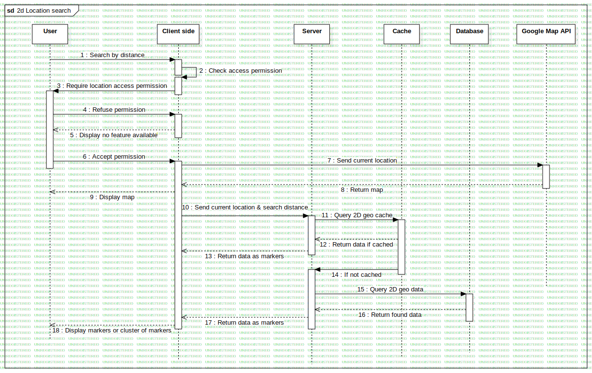

Interaction1
UMLInteraction
Football field website
::
2d location search Sequence
::
Interaction1
Description
none
Diagrams

2d Location search
Participants
User
Client side
Server
Google Map API
Database
Cache
Messages
Search by distance (User→Client side)
Check access permission (Client side→Client side)
Require location access permission (Client side→User)
Refuse permission (User→Client side)
Display no feature available (Client side→User)
Accept permission (User→Client side)
Send current location (Client side→Google Map API)
Return map (Google Map API→Client side)
Display map (Client side→User)
Send current location & search distance (Client side→Server)
Query 2D geo cache (Server→Cache)
Return data if cached (Cache→Server)
Return data as markers (Server→Client side)
If not cached (Cache→Server)
Query 2D geo data (Server→Database)
Return found data (Database→Server)
Return data as markers (Server→Client side)
Display markers or cluster of markers (Client side→User)
Properties
Name
Value
name
Interaction1
stereotype
null
visibility
public
isReentrant
true
Owned Elements
2d Location search